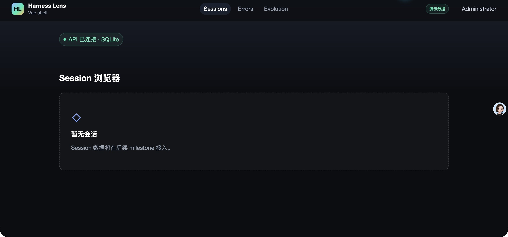
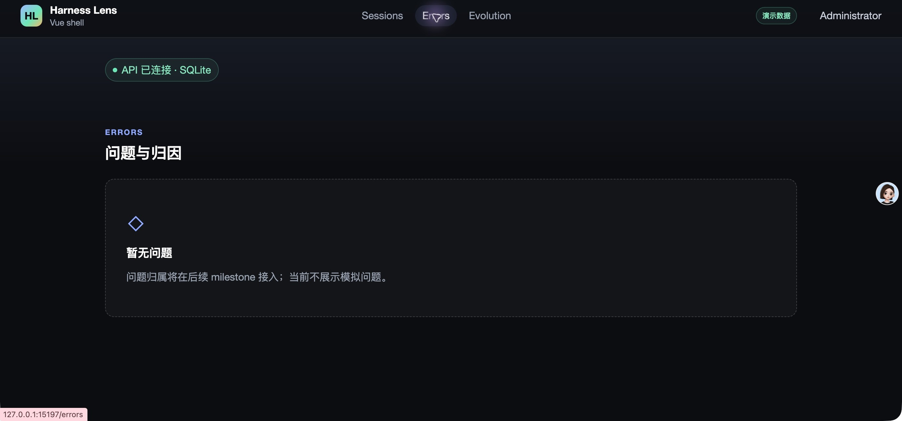
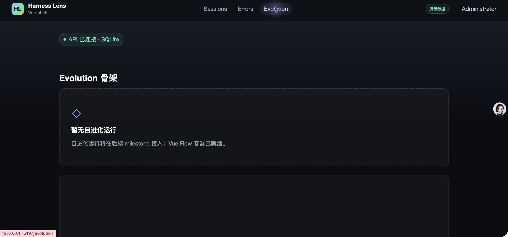

- Issue
- #36 · M2 Agent tree
- PR
- #89
- Commit
- 3a78e65
- Runtime
- FastAPI + Vite + Chrome
- Database
- Temporary SQLite smoke instance
Harness Evolution · PR #89
M2-04 Agent 树组装集成冒烟报告
在真实本地 Claude 轨迹、synthetic corpus、临时 SQLite、FastAPI、Vite 与 Chrome 上验证 Agent 树组装。真实 66 个节点全部可回溯 root，Workflow 与 forked skill 由 synthetic golden 覆盖，未发现集成缺陷。
11冒烟场景
11通过
66真实树节点
13树测试通过
Environment and Artifact
2026-10-25 · macOS · Chrome · SQLiteScenario Matrix
11 pass| # | 场景 | 结果 | 观测 | 证据 |
|---|---|---|---|---|
| 01 | 真实本地归一化 | PASS | 4 roots、66 agents、15,507 lines、2,755 messages、9,743,423 tokens、3,536 tools、97 errors、53 user turns，解析问题为 0。 | pnpm data:normalize:sessions 4 roots with model / 4 roots with user turns |
| 02 | 真实本地 Agent 树 | PASS | 4 roots、66 nodes、62 subagents 全部回溯 main；18 teammate；1 个 MISSING_PARENT_TOOL_USE_ID 已安全降级。 | pnpm data:tree:sessions backtracked_subagents=62 |
| 03 | Synthetic 树 golden | PASS | 4 roots、8 nodes 精确对齐；包含 1 个零统计 Workflow 节点、1 个 forked skill、嵌套 Agent 与精确 parent/toolUseId。 | test_synthetic_corpus_assembles_all_documented_node_types fixtures:check |
| 04 | 缺父与歧义边 | PASS | 缺父 child 与合成父事件共享确定性 toolUseId；重复父调用不会形成歧义双胞胎边，告警保持脱敏。 | missing_or_unknown_parent_tool_use_id_degrades_to_main duplicate_parent_tool_use_ids_do_not_create_ambiguous_edges |
| 05 | 结构拒绝 | PASS | 缺 main、重复 main、父环、重复 node id 与不可回溯节点均被拒绝。 | test_rejects_missing_duplicate_main_and_parent_cycle 13 tree tests passed |
| 06 | 确定性排序 | PASS | 打乱输入后节点顺序、事件签名与告警码保持一致。 | test_ordering_is_deterministic_after_input_shuffle |
| 07 | 会话聚合与状态 | PASS | 节点统计求和、main user turns、distinct models、agents_count 与 ok/partial/fail 规则均通过；末尾无 assistant 为 fail。 | test_session_status_uses_final_assistant_and_fatal_error_rules 4/8/3/3/3/1/1 aggregate |
| 08 | 字段与隐私 | PASS | provider spawnDepth、完整 title、shortTitle、搜索文本和父 trigger description 正确；公开节点无 message/content 字段，告警不含正文或路径。 | test_public_node_contract_has_no_message_content_fields test_preserves_provider_depth_adds_missing_edge_and_complete_title |
| 09 | 持久化边界 | PASS | m2-04 仅组装纯树，不更新 source_records.processed_*，完整重放仍由 m2-05 承担。 | tree assembler API SQLite DB 17 passed |
| 10 | 真实 Chrome 壳 | PASS | 首登改密后进入 Sessions；三个入口、active 状态、demo 角标和当前用户均可见。 | screenshots/01-sessions.jpeg screenshots/02-errors.jpeg screenshots/03-evolution.jpeg |
| 11 | 浏览器门禁 | PASS | 真实 Chrome E2E 4/4：390×844 无横向溢出，直接 Evolution 深链无 Vue Flow warning，控制台无意外警告或错误。 | pnpm test:e2e -- m1-shell scrollWidth=390 = clientWidth=390 console violations=0 |
Issues and Observations
No defects foundNo defects were found.
Evidence
3 screenshots


Automated Coverage Assessment
4 areas reviewed| 区域 | 覆盖 | 结论 | 建议 |
|---|---|---|---|
| 真实 Agent 树 | 只读本地数据聚合 | 4 roots / 66 nodes / 62 subagents 全部回溯，18 teammate，1 个安全降级告警。 | 后续持久化 issue 继续复用同一真实聚合作为回归基线。 |
| Synthetic 树 | fixture golden + 13 项单测 | Workflow、forked skill、嵌套 Agent、缺父和环检测均有确定性覆盖。 | 新增树类型时同步扩充 corpus 与 golden。 |
| 聚合与隐私 | 字段级单测 | 公开结果不含消息、thinking、tool-result 正文或本地路径。 | 持久化接入时继续只消费 AssembledSessionTree。 |
| 浏览器壳 | Computer Use + 真实 Chrome E2E | 导航、响应式、控制台和 Vue Flow 深链均通过。 | 树 UI 上线后增加节点图交互冒烟。 |
Conclusion
通过m2-04 的纯树组装、真实回溯、synthetic 边界与隐私约束均通过集成验证，未发现需要返工的问题。
- 真实 62 个 subagent 全部可回溯 root。
- Workflow 与 forked skill 由 synthetic golden 完整覆盖。
- 浏览器 390px、控制台与 Vue Flow 深链门禁通过。
证据源：Computer Use 截图、真实 CLI 聚合、自动化测试与浏览器 E2E。HTML 由 JSON renderer 生成，不手工编辑。